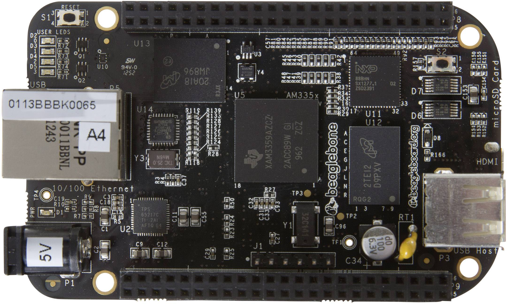

En los útimos años están apareciendo multitud de miniordenadores. Estos son algunos de ellos:
BeagleBoard es una placa computadora de hardware libre de bajo consumo producida por Texas Instruments en asociación con DigiKey y Newark element14. El BeagleBoard también fue diseñado con el desarrollo de software de código abierto en mente.
